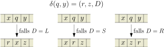
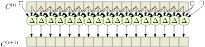
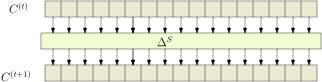
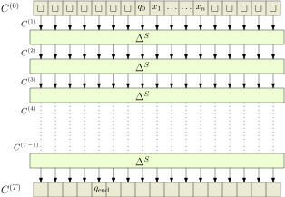
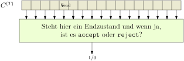

9.2 Turing-Maschinen zu Schaltkreisen!./course1/wly/09/02-Turing-machines-and-circuits.wly:2:11
9.2 Turing-Maschinen zu Schaltkreisen!./course1/wly/09/02-Turing-machines-and-circuits.wly:2:11
Sei ./course1/wly/09/02-Turing-machines-and-circuits.wly:4:5$L \subseteq \{0,1\}^*$./course1/wly/09/02-Turing-machines-and-circuits.wly:4:9 eine Sprache und ./course1/wly/09/02-Turing-machines-and-circuits.wly:4:32$M$./course1/wly/09/02-Turing-machines-and-circuits.wly:4:50 eine./course1/wly/09/02-Turing-machines-and-circuits.wly:4:53 Turing-Maschine, die ./course1/wly/09/02-Turing-machines-and-circuits.wly:5:5$L$./course1/wly/09/02-Turing-machines-and-circuits.wly:5:26 in Zeit ./course1/wly/09/02-Turing-machines-and-circuits.wly:5:29$t(n)$./course1/wly/09/02-Turing-machines-and-circuits.wly:5:38 entscheidet. Das./course1/wly/09/02-Turing-machines-and-circuits.wly:5:44 heißt, für jedes ./course1/wly/09/02-Turing-machines-and-circuits.wly:6:5$x \in \{0,1\}^*$./course1/wly/09/02-Turing-machines-and-circuits.wly:6:22 erreicht ./course1/wly/09/02-Turing-machines-and-circuits.wly:6:39$M$./course1/wly/09/02-Turing-machines-and-circuits.wly:6:49 nach./course1/wly/09/02-Turing-machines-and-circuits.wly:6:52 maximal ./course1/wly/09/02-Turing-machines-and-circuits.wly:7:5$t(|x|)$./course1/wly/09/02-Turing-machines-and-circuits.wly:7:13 Schritten einen Endzustand, und./course1/wly/09/02-Turing-machines-and-circuits.wly:7:21 ./course1/wly/09/02-Turing-machines-and-circuits.wly:8:5$M(x) = \texttt{accept}$./course1/wly/09/02-Turing-machines-and-circuits.wly:8:5 genau dann, wenn ./course1/wly/09/02-Turing-machines-and-circuits.wly:8:29$x \in L$./course1/wly/09/02-Turing-machines-and-circuits.wly:8:47 ist../course1/wly/09/02-Turing-machines-and-circuits.wly:8:56 Für jedes ./course1/wly/09/02-Turing-machines-and-circuits.wly:9:5$n \in \N$./course1/wly/09/02-Turing-machines-and-circuits.wly:9:15 sei ./course1/wly/09/02-Turing-machines-and-circuits.wly:9:25$f_{L,n}$./course1/wly/09/02-Turing-machines-and-circuits.wly:9:30 die Boolesche Funktion./course1/wly/09/02-Turing-machines-and-circuits.wly:9:39
Also ./course1/wly/09/02-Turing-machines-and-circuits.wly:16:5$f(x)=1$./course1/wly/09/02-Turing-machines-and-circuits.wly:16:10 falls ./course1/wly/09/02-Turing-machines-and-circuits.wly:16:18$M$./course1/wly/09/02-Turing-machines-and-circuits.wly:16:25 die Eingabe ./course1/wly/09/02-Turing-machines-and-circuits.wly:16:28$x$./course1/wly/09/02-Turing-machines-and-circuits.wly:16:41 akzeptiert und./course1/wly/09/02-Turing-machines-and-circuits.wly:16:44 ./course1/wly/09/02-Turing-machines-and-circuits.wly:17:5$f(x)=0$./course1/wly/09/02-Turing-machines-and-circuits.wly:17:5 falls ./course1/wly/09/02-Turing-machines-and-circuits.wly:17:13$M$./course1/wly/09/02-Turing-machines-and-circuits.wly:17:20 die Eingabe ablehnt (falls ./course1/wly/09/02-Turing-machines-and-circuits.wly:17:23$L$./course1/wly/09/02-Turing-machines-and-circuits.wly:17:51 und ./course1/wly/09/02-Turing-machines-and-circuits.wly:17:54$n$./course1/wly/09/02-Turing-machines-and-circuits.wly:17:59 ./course1/wly/09/02-Turing-machines-and-circuits.wly:17:62 aus dem Kontext hervorgehen, schreiben wir einfach ./course1/wly/09/02-Turing-machines-and-circuits.wly:18:5$f$./course1/wly/09/02-Turing-machines-and-circuits.wly:18:56)../course1/wly/09/02-Turing-machines-and-circuits.wly:18:59
Theorem 9.2.1./course1/wly/09/02-Turing-machines-and-circuits.wly:20:5 ./course1/wly/09/02-Turing-machines-and-circuits.wly:20:5 Wenn ./course1/wly/09/02-Turing-machines-and-circuits.wly:21:9$L$./course1/wly/09/02-Turing-machines-and-circuits.wly:21:14 in Zeit ./course1/wly/09/02-Turing-machines-and-circuits.wly:21:17$t(n)$./course1/wly/09/02-Turing-machines-and-circuits.wly:21:26 entscheidbar ist und ./course1/wly/09/02-Turing-machines-and-circuits.wly:21:32$t(n) \geq n$./course1/wly/09/02-Turing-machines-and-circuits.wly:21:54 ./course1/wly/09/02-Turing-machines-and-circuits.wly:21:67 gilt, dann gibt es einen Booleschen Schaltkreis ./course1/wly/09/02-Turing-machines-and-circuits.wly:22:9$C$./course1/wly/09/02-Turing-machines-and-circuits.wly:22:57 mit./course1/wly/09/02-Turing-machines-and-circuits.wly:22:60 ./course1/wly/09/02-Turing-machines-and-circuits.wly:23:9$O(t(n)^2)$./course1/wly/09/02-Turing-machines-and-circuits.wly:23:9 Gates, der ./course1/wly/09/02-Turing-machines-and-circuits.wly:23:20$f_{L,n}$./course1/wly/09/02-Turing-machines-and-circuits.wly:23:32 berechnet../course1/wly/09/02-Turing-machines-and-circuits.wly:23:41
Beweisidee. Die ./course1/wly/09/02-Turing-machines-and-circuits.wly:27:9$k$./course1/wly/09/02-Turing-machines-and-circuits.wly:27:13-Band-Turingmaschine./course1/wly/09/02-Turing-machines-and-circuits.wly:27:16 ./course1/wly/09/02-Turing-machines-and-circuits.wly:27:16$M$./course1/wly/09/02-Turing-machines-and-circuits.wly:27:37,./course1/wly/09/02-Turing-machines-and-circuits.wly:27:40 die ./course1/wly/09/02-Turing-machines-and-circuits.wly:27:40$L$./course1/wly/09/02-Turing-machines-and-circuits.wly:27:46 entscheidet,./course1/wly/09/02-Turing-machines-and-circuits.wly:27:49 macht auf Eingabe ./course1/wly/09/02-Turing-machines-and-circuits.wly:28:9$x$./course1/wly/09/02-Turing-machines-and-circuits.wly:28:27 höchstens ./course1/wly/09/02-Turing-machines-and-circuits.wly:28:30$T = t(|x|)$./course1/wly/09/02-Turing-machines-and-circuits.wly:28:41 Schritte. Es./course1/wly/09/02-Turing-machines-and-circuits.wly:28:53 gibt also einen Bereich von insgesamt ./course1/wly/09/02-Turing-machines-and-circuits.wly:29:9$2Tk$./course1/wly/09/02-Turing-machines-and-circuits.wly:29:47 Zellen ./course1/wly/09/02-Turing-machines-and-circuits.wly:29:52(./course1/wly/09/02-Turing-machines-and-circuits.wly:29:52$2t$./course1/wly/09/02-Turing-machines-and-circuits.wly:29:61 ./course1/wly/09/02-Turing-machines-and-circuits.wly:29:65 pro Band), den sie nie verlässt. Das heißt, jede./course1/wly/09/02-Turing-machines-and-circuits.wly:30:9 Konfiguration besteht aus ./course1/wly/09/02-Turing-machines-and-circuits.wly:31:9$O(t)$./course1/wly/09/02-Turing-machines-and-circuits.wly:31:35 Zeichen. Die Funktion./course1/wly/09/02-Turing-machines-and-circuits.wly:31:41 ./course1/wly/09/02-Turing-machines-and-circuits.wly:32:9$\hat{\delta}_M$./course1/wly/09/02-Turing-machines-and-circuits.wly:32:9,./course1/wly/09/02-Turing-machines-and-circuits.wly:32:25 die für jede Konfiguration ./course1/wly/09/02-Turing-machines-and-circuits.wly:32:25$C$./course1/wly/09/02-Turing-machines-and-circuits.wly:32:54 die./course1/wly/09/02-Turing-machines-and-circuits.wly:32:57 Nachfolgekonfiguration ./course1/wly/09/02-Turing-machines-and-circuits.wly:33:9$C' := \hat{\delta}_M(C)$./course1/wly/09/02-Turing-machines-and-circuits.wly:33:32 ./course1/wly/09/02-Turing-machines-and-circuits.wly:33:57 berechnet, ist sehr lokal und sehr einfach; die ./course1/wly/09/02-Turing-machines-and-circuits.wly:34:9$i$./course1/wly/09/02-Turing-machines-and-circuits.wly:34:57-te./course1/wly/09/02-Turing-machines-and-circuits.wly:34:60 ./course1/wly/09/02-Turing-machines-and-circuits.wly:34:60 Stelle von Konfiguration ./course1/wly/09/02-Turing-machines-and-circuits.wly:35:9$C$./course1/wly/09/02-Turing-machines-and-circuits.wly:35:34 hat nur auf die Stellen ./course1/wly/09/02-Turing-machines-and-circuits.wly:35:37$i-2$./course1/wly/09/02-Turing-machines-and-circuits.wly:35:62,./course1/wly/09/02-Turing-machines-and-circuits.wly:35:67 ./course1/wly/09/02-Turing-machines-and-circuits.wly:35:67 ./course1/wly/09/02-Turing-machines-and-circuits.wly:36:9$i-1$./course1/wly/09/02-Turing-machines-and-circuits.wly:36:9,./course1/wly/09/02-Turing-machines-and-circuits.wly:36:14 ./course1/wly/09/02-Turing-machines-and-circuits.wly:36:14$i$./course1/wly/09/02-Turing-machines-and-circuits.wly:36:16 und ./course1/wly/09/02-Turing-machines-and-circuits.wly:36:19$i+1$./course1/wly/09/02-Turing-machines-and-circuits.wly:36:24 von ./course1/wly/09/02-Turing-machines-and-circuits.wly:36:29$C'$./course1/wly/09/02-Turing-machines-and-circuits.wly:36:34 Einfluss. Somit können wir./course1/wly/09/02-Turing-machines-and-circuits.wly:36:38 bei geeigneter binärer Codierung einen effizienten./course1/wly/09/02-Turing-machines-and-circuits.wly:37:9 Schaltkreis bauen, der ./course1/wly/09/02-Turing-machines-and-circuits.wly:38:9$\hat{\delta}_{M}$./course1/wly/09/02-Turing-machines-and-circuits.wly:38:32 berechnet. Da./course1/wly/09/02-Turing-machines-and-circuits.wly:38:50 wir wissen, dass ./course1/wly/09/02-Turing-machines-and-circuits.wly:39:9$M$./course1/wly/09/02-Turing-machines-and-circuits.wly:39:26 höchstens ./course1/wly/09/02-Turing-machines-and-circuits.wly:39:29$T$./course1/wly/09/02-Turing-machines-and-circuits.wly:39:40 Schritte macht, wissen./course1/wly/09/02-Turing-machines-and-circuits.wly:39:43 wir, dass ./course1/wly/09/02-Turing-machines-and-circuits.wly:40:9$\hat{\delta}^*(x) = \hat{\delta}^{(T)}(x)$./course1/wly/09/02-Turing-machines-and-circuits.wly:40:19 ./course1/wly/09/02-Turing-machines-and-circuits.wly:40:62 gilt; wir können nun einfach ./course1/wly/09/02-Turing-machines-and-circuits.wly:41:9$T$./course1/wly/09/02-Turing-machines-and-circuits.wly:41:38 Schaltkreise./course1/wly/09/02-Turing-machines-and-circuits.wly:41:41 hintereinanderschalten, um ./course1/wly/09/02-Turing-machines-and-circuits.wly:42:9$\hat{\delta}^*(x)$./course1/wly/09/02-Turing-machines-and-circuits.wly:42:36 und somit./course1/wly/09/02-Turing-machines-and-circuits.wly:42:55 die Endkonfiguration zu berechnen; mit einem weiteren./course1/wly/09/02-Turing-machines-and-circuits.wly:43:9 einfachen Schaltkreis können wir nun den erreichten./course1/wly/09/02-Turing-machines-and-circuits.wly:44:9 Endzustand auslesen und entsprechen 0 oder 1 ausgeben../course1/wly/09/02-Turing-machines-and-circuits.wly:45:9
Beweis Wir zeigen den Beweis schematisch anhand von ./course1/wly/09/02-Turing-machines-and-circuits.wly:48:9$1$./course1/wly/09/02-Turing-machines-and-circuits.wly:48:54 ./course1/wly/09/02-Turing-machines-and-circuits.wly:48:57 -Band-Turingmaschinen. Für ./course1/wly/09/02-Turing-machines-and-circuits.wly:49:9$k$./course1/wly/09/02-Turing-machines-and-circuits.wly:49:36 -Bandmaschinen geht es fast./course1/wly/09/02-Turing-machines-and-circuits.wly:49:39 genau so. Erinnern Sie sich an die Definition der./course1/wly/09/02-Turing-machines-and-circuits.wly:50:9 ./course1/wly/09/02-Turing-machines-and-circuits.wly:51:9Konfiguration./course1/wly/09/02-Turing-machines-and-circuits.wly:51:11 einer./course1/wly/09/02-Turing-machines-and-circuits.wly:51:50 Turing-Maschine. Formal war das ein Wort./course1/wly/09/02-Turing-machines-and-circuits.wly:52:9 ./course1/wly/09/02-Turing-machines-and-circuits.wly:53:9$C \in \Gamma^* \times Q \times \Gamma^*$./course1/wly/09/02-Turing-machines-and-circuits.wly:53:9../course1/wly/09/02-Turing-machines-and-circuits.wly:53:50 Ich zeige hier./course1/wly/09/02-Turing-machines-and-circuits.wly:53:50 schematisch, wie aus einer Konfiguration per ./course1/wly/09/02-Turing-machines-and-circuits.wly:54:9$\hat{\delta}$./course1/wly/09/02-Turing-machines-and-circuits.wly:54:54 ./course1/wly/09/02-Turing-machines-and-circuits.wly:54:68 die Folgekonfiguration wird:./course1/wly/09/02-Turing-machines-and-circuits.wly:55:9

course1/public/img/09-complexity-theory/to-circuits/to-circuits-01-01.svgWenn also das Kopfsymbol an Stelle ./course1/wly/09/02-Turing-machines-and-circuits.wly:62:9$i$./course1/wly/09/02-Turing-machines-and-circuits.wly:62:44 der Konfiguration./course1/wly/09/02-Turing-machines-and-circuits.wly:62:47 steht, dann können sich in der Folgekonfiguration nur die./course1/wly/09/02-Turing-machines-and-circuits.wly:63:9 Stellen ./course1/wly/09/02-Turing-machines-and-circuits.wly:64:9$i-1$./course1/wly/09/02-Turing-machines-and-circuits.wly:64:17,./course1/wly/09/02-Turing-machines-and-circuits.wly:64:22 ./course1/wly/09/02-Turing-machines-and-circuits.wly:64:22$i$./course1/wly/09/02-Turing-machines-and-circuits.wly:64:24 und ./course1/wly/09/02-Turing-machines-and-circuits.wly:64:27$i+1$./course1/wly/09/02-Turing-machines-and-circuits.wly:64:32 ändern. Allerdings hat bei./course1/wly/09/02-Turing-machines-and-circuits.wly:64:37 einer Linksbewegung das gelesene Zeichen (an Stelle ./course1/wly/09/02-Turing-machines-and-circuits.wly:65:9$i+1$./course1/wly/09/02-Turing-machines-and-circuits.wly:65:61)./course1/wly/09/02-Turing-machines-and-circuits.wly:65:66 ./course1/wly/09/02-Turing-machines-and-circuits.wly:65:66 auch Einfluss auf den zukünftigen Inhalt von Zelle ./course1/wly/09/02-Turing-machines-and-circuits.wly:66:9$i-1$./course1/wly/09/02-Turing-machines-and-circuits.wly:66:60;./course1/wly/09/02-Turing-machines-and-circuits.wly:66:65 ./course1/wly/09/02-Turing-machines-and-circuits.wly:66:65 Zelle ./course1/wly/09/02-Turing-machines-and-circuits.wly:67:9$j$./course1/wly/09/02-Turing-machines-and-circuits.wly:67:15 kann also Zellen ./course1/wly/09/02-Turing-machines-and-circuits.wly:67:18$j-2, j-1, j, j+1$./course1/wly/09/02-Turing-machines-and-circuits.wly:67:36 im nächsten./course1/wly/09/02-Turing-machines-and-circuits.wly:67:54 Schritt beeinflussen. Lege wir zuerst eine globale./course1/wly/09/02-Turing-machines-and-circuits.wly:68:9 Indizierung der Stellen der Konfiguration fest. Der./course1/wly/09/02-Turing-machines-and-circuits.wly:69:9 Schreib-Lese-Kopf startet an Zelle ./course1/wly/09/02-Turing-machines-and-circuits.wly:70:9$0$./course1/wly/09/02-Turing-machines-and-circuits.wly:70:44 des Bandes; das./course1/wly/09/02-Turing-machines-and-circuits.wly:70:47 Eingabewort belegt also die Zellen ./course1/wly/09/02-Turing-machines-and-circuits.wly:71:9$0, 1, \dots, n-1$./course1/wly/09/02-Turing-machines-and-circuits.wly:71:44../course1/wly/09/02-Turing-machines-and-circuits.wly:71:62 Da./course1/wly/09/02-Turing-machines-and-circuits.wly:71:62 die Turingmaschine maximal ./course1/wly/09/02-Turing-machines-and-circuits.wly:72:9$T$./course1/wly/09/02-Turing-machines-and-circuits.wly:72:36 Schritte läuft, ist der./course1/wly/09/02-Turing-machines-and-circuits.wly:72:39 Kopf immer auf einer Zelle in ./course1/wly/09/02-Turing-machines-and-circuits.wly:73:9$\{-T, \dots, T\}$./course1/wly/09/02-Turing-machines-and-circuits.wly:73:39../course1/wly/09/02-Turing-machines-and-circuits.wly:73:57 Wir./course1/wly/09/02-Turing-machines-and-circuits.wly:73:57 können also jede Konfiguration mit ./course1/wly/09/02-Turing-machines-and-circuits.wly:74:9$2T+1$./course1/wly/09/02-Turing-machines-and-circuits.wly:74:44 Zeichen./course1/wly/09/02-Turing-machines-and-circuits.wly:74:50 darstellen - nein, mit ./course1/wly/09/02-Turing-machines-and-circuits.wly:75:9$S := 2T+2$./course1/wly/09/02-Turing-machines-and-circuits.wly:75:32 Zeichen, da der Kopf./course1/wly/09/02-Turing-machines-and-circuits.wly:75:43 selbst ja auch eine Stelle der Konfiguration belegt. Somit./course1/wly/09/02-Turing-machines-and-circuits.wly:76:9 ist also ./course1/wly/09/02-Turing-machines-and-circuits.wly:77:9$C \in (Q \cup \Gamma)^{s}$./course1/wly/09/02-Turing-machines-and-circuits.wly:77:18../course1/wly/09/02-Turing-machines-and-circuits.wly:77:45 Unbenutzte Zellen./course1/wly/09/02-Turing-machines-and-circuits.wly:77:45 links und rechts füllen wir mit ./course1/wly/09/02-Turing-machines-and-circuits.wly:78:9$\Box$./course1/wly/09/02-Turing-machines-and-circuits.wly:78:41 auf, so dass immer./course1/wly/09/02-Turing-machines-and-circuits.wly:78:47 eine Länge von ./course1/wly/09/02-Turing-machines-and-circuits.wly:79:9$s$./course1/wly/09/02-Turing-machines-and-circuits.wly:79:24 benutzt wird. Sei./course1/wly/09/02-Turing-machines-and-circuits.wly:79:27 ./course1/wly/09/02-Turing-machines-and-circuits.wly:80:9$C^{(t)} = \hat{\delta}^{(t)}(\qstart, x)$./course1/wly/09/02-Turing-machines-and-circuits.wly:80:9 die./course1/wly/09/02-Turing-machines-and-circuits.wly:80:51 Konfiguration nach ./course1/wly/09/02-Turing-machines-and-circuits.wly:81:9$t$./course1/wly/09/02-Turing-machines-and-circuits.wly:81:28 Schritten. Sei ./course1/wly/09/02-Turing-machines-and-circuits.wly:81:31$C^{(t)}_i$./course1/wly/09/02-Turing-machines-and-circuits.wly:81:47 das./course1/wly/09/02-Turing-machines-and-circuits.wly:81:58 ./course1/wly/09/02-Turing-machines-and-circuits.wly:82:9$i$./course1/wly/09/02-Turing-machines-and-circuits.wly:82:9-te./course1/wly/09/02-Turing-machines-and-circuits.wly:82:12 Zeichen darin. Den Wert von ./course1/wly/09/02-Turing-machines-and-circuits.wly:82:12$C^{(t+1)}_i$./course1/wly/09/02-Turing-machines-and-circuits.wly:82:44 können./course1/wly/09/02-Turing-machines-and-circuits.wly:82:57 wir bestimmen allein mit Kenntnis von ./course1/wly/09/02-Turing-machines-and-circuits.wly:83:9$C^{(t)}_{i-1}$./course1/wly/09/02-Turing-machines-and-circuits.wly:83:47,./course1/wly/09/02-Turing-machines-and-circuits.wly:83:62 ./course1/wly/09/02-Turing-machines-and-circuits.wly:83:62 ./course1/wly/09/02-Turing-machines-and-circuits.wly:84:9$C^{(t)}_{i}$./course1/wly/09/02-Turing-machines-and-circuits.wly:84:9,./course1/wly/09/02-Turing-machines-and-circuits.wly:84:22
$C^{(t)}_{i+1}$./course1/wly/09/02-Turing-machines-and-circuits.wly:86:9 und ./course1/wly/09/02-Turing-machines-and-circuits.wly:86:24$C^{(t)}_{i+2}$./course1/wly/09/02-Turing-machines-and-circuits.wly:86:29../course1/wly/09/02-Turing-machines-and-circuits.wly:86:44 Es gibt also eine./course1/wly/09/02-Turing-machines-and-circuits.wly:86:44 Funktion./course1/wly/09/02-Turing-machines-and-circuits.wly:87:9
die dies beschreibt, also mit./course1/wly/09/02-Turing-machines-and-circuits.wly:93:9
Im Detail ist die Arbeitsweise von ./course1/wly/09/02-Turing-machines-and-circuits.wly:100:9$\tilde{\delta}$./course1/wly/09/02-Turing-machines-and-circuits.wly:100:44 wie./course1/wly/09/02-Turing-machines-and-circuits.wly:100:60 folgt:./course1/wly/09/02-Turing-machines-and-circuits.wly:101:9
Wenn wir ./course1/wly/09/02-Turing-machines-and-circuits.wly:124:9$Q \cup \Gamma$./course1/wly/09/02-Turing-machines-and-circuits.wly:124:18 binär codieren mit./course1/wly/09/02-Turing-machines-and-circuits.wly:124:33 ./course1/wly/09/02-Turing-machines-and-circuits.wly:125:9$l := \ceil{\log_2 |Q \cup \Gamma|}$./course1/wly/09/02-Turing-machines-and-circuits.wly:125:9 Bits, so wird./course1/wly/09/02-Turing-machines-and-circuits.wly:125:45 ./course1/wly/09/02-Turing-machines-and-circuits.wly:126:9$\tilde{\delta}$./course1/wly/09/02-Turing-machines-and-circuits.wly:126:9 zu einer Booleschen Funktion./course1/wly/09/02-Turing-machines-and-circuits.wly:126:25 ./course1/wly/09/02-Turing-machines-and-circuits.wly:127:9$\tilde{\delta} : \{0,1\}^{4l} \rightarrow \{0,1\}^l$./course1/wly/09/02-Turing-machines-and-circuits.wly:127:9../course1/wly/09/02-Turing-machines-and-circuits.wly:127:62 Wir./course1/wly/09/02-Turing-machines-and-circuits.wly:127:62 können dafür einen Schaltkreis der Größe./course1/wly/09/02-Turing-machines-and-circuits.wly:128:9 ./course1/wly/09/02-Turing-machines-and-circuits.wly:129:9$O(2^l) = O(|\Gamma \cup Q|^4)$./course1/wly/09/02-Turing-machines-and-circuits.wly:129:9 bauen: per./course1/wly/09/02-Turing-machines-and-circuits.wly:129:40 Wahrheitstabelle wird er etwas größer; mit der./course1/wly/09/02-Turing-machines-and-circuits.wly:130:9 Lupanov-Schranke (./course1/wly/09/02-Turing-machines-and-circuits.wly:131:9Theorem 2.6.2) kriegen Sie./course1/wly/09/02-Turing-machines-and-circuits.wly:131:9 ./course1/wly/09/02-Turing-machines-and-circuits.wly:132:9$O(2^l)$./course1/wly/09/02-Turing-machines-and-circuits.wly:132:9../course1/wly/09/02-Turing-machines-and-circuits.wly:132:17 Wir haben nun also einen Schaltkreis ./course1/wly/09/02-Turing-machines-and-circuits.wly:132:17$\Delta$./course1/wly/09/02-Turing-machines-and-circuits.wly:132:56,./course1/wly/09/02-Turing-machines-and-circuits.wly:132:64 ./course1/wly/09/02-Turing-machines-and-circuits.wly:132:64 der ./course1/wly/09/02-Turing-machines-and-circuits.wly:133:9$\tilde{\delta}$./course1/wly/09/02-Turing-machines-and-circuits.wly:133:13 berechnet. Seine Größe ist./course1/wly/09/02-Turing-machines-and-circuits.wly:133:29 ./course1/wly/09/02-Turing-machines-and-circuits.wly:134:9$O(|\Gamma \cup Q|^4)$./course1/wly/09/02-Turing-machines-and-circuits.wly:134:9../course1/wly/09/02-Turing-machines-and-circuits.wly:134:31 Da wir ./course1/wly/09/02-Turing-machines-and-circuits.wly:134:31$|Q|$./course1/wly/09/02-Turing-machines-and-circuits.wly:134:40 und ./course1/wly/09/02-Turing-machines-and-circuits.wly:134:45$|\Gamma|$./course1/wly/09/02-Turing-machines-and-circuits.wly:134:50 als./course1/wly/09/02-Turing-machines-and-circuits.wly:134:60 konstant betrachten, da es nicht von der Eingabegröße./course1/wly/09/02-Turing-machines-and-circuits.wly:135:9 ./course1/wly/09/02-Turing-machines-and-circuits.wly:136:9$n=|x|$./course1/wly/09/02-Turing-machines-and-circuits.wly:136:9 abhängt, können wir sogar behaupten: die Größe von./course1/wly/09/02-Turing-machines-and-circuits.wly:136:16 ./course1/wly/09/02-Turing-machines-and-circuits.wly:137:9$\Delta$./course1/wly/09/02-Turing-machines-and-circuits.wly:137:9 ist ./course1/wly/09/02-Turing-machines-and-circuits.wly:137:17$O(1)$./course1/wly/09/02-Turing-machines-and-circuits.wly:137:22../course1/wly/09/02-Turing-machines-and-circuits.wly:137:28 Wir schalten jetzt ./course1/wly/09/02-Turing-machines-and-circuits.wly:137:28$S$./course1/wly/09/02-Turing-machines-and-circuits.wly:137:49 Kopien von./course1/wly/09/02-Turing-machines-and-circuits.wly:137:52 ./course1/wly/09/02-Turing-machines-and-circuits.wly:138:9$\Delta$./course1/wly/09/02-Turing-machines-and-circuits.wly:138:9 parallel, um./course1/wly/09/02-Turing-machines-and-circuits.wly:138:17 ./course1/wly/09/02-Turing-machines-and-circuits.wly:139:9$\hat{\delta}: \mathcal{C} \rightarrow \mathcal{C}$./course1/wly/09/02-Turing-machines-and-circuits.wly:139:9 zu./course1/wly/09/02-Turing-machines-and-circuits.wly:139:60 berechnen, also aus einer gegebenen Konfiguration die./course1/wly/09/02-Turing-machines-and-circuits.wly:140:9 Folgekonfiguration:./course1/wly/09/02-Turing-machines-and-circuits.wly:141:9

course1/public/img/09-complexity-theory/to-circuits/to-circuits-02-01.svgJeder Pfeil steht hierbei für ./course1/wly/09/02-Turing-machines-and-circuits.wly:148:9$l$./course1/wly/09/02-Turing-machines-and-circuits.wly:148:39 Boolesche Kabel. Dies./course1/wly/09/02-Turing-machines-and-circuits.wly:148:42 ergibt ./course1/wly/09/02-Turing-machines-and-circuits.wly:149:9einen./course1/wly/09/02-Turing-machines-and-circuits.wly:149:17 Schaltkreis ./course1/wly/09/02-Turing-machines-and-circuits.wly:149:23$\Delta^S$./course1/wly/09/02-Turing-machines-and-circuits.wly:149:36,./course1/wly/09/02-Turing-machines-and-circuits.wly:149:46 der./course1/wly/09/02-Turing-machines-and-circuits.wly:149:46 ./course1/wly/09/02-Turing-machines-and-circuits.wly:150:9$\hat{\delta}: \mathcal{C} \rightarrow \mathcal{C}$./course1/wly/09/02-Turing-machines-and-circuits.wly:150:9 ./course1/wly/09/02-Turing-machines-and-circuits.wly:150:60 berechnet (bzw. die Boolesche Codierung dieser Funktion)./course1/wly/09/02-Turing-machines-and-circuits.wly:151:9 und Größe ./course1/wly/09/02-Turing-machines-and-circuits.wly:152:9$O(S) = O(t(n))$./course1/wly/09/02-Turing-machines-and-circuits.wly:152:19 hat:./course1/wly/09/02-Turing-machines-and-circuits.wly:152:35

course1/public/img/09-complexity-theory/to-circuits/to-circuits-03-01.svgDie Inputs, die Zellen außerhalb des Bereichs lesen,./course1/wly/09/02-Turing-machines-and-circuits.wly:159:9 setzen wir einfach auf ./course1/wly/09/02-Turing-machines-and-circuits.wly:160:9$\Box$./course1/wly/09/02-Turing-machines-and-circuits.wly:160:32 (Blank) bzw. dessen binäre./course1/wly/09/02-Turing-machines-and-circuits.wly:160:38 Codierung, weil wir ja wissen, dass der Schreib-Lese-Kopf./course1/wly/09/02-Turing-machines-and-circuits.wly:161:9 niemals dorthin gelangen wird. Jetzt schalten wir ./course1/wly/09/02-Turing-machines-and-circuits.wly:162:9$T$./course1/wly/09/02-Turing-machines-and-circuits.wly:162:59 ./course1/wly/09/02-Turing-machines-and-circuits.wly:162:62 Kopien von ./course1/wly/09/02-Turing-machines-and-circuits.wly:163:9$\Delta^{S}$./course1/wly/09/02-Turing-machines-and-circuits.wly:163:20 hintereinander, um aus der./course1/wly/09/02-Turing-machines-and-circuits.wly:163:32 Startkonfiguration ./course1/wly/09/02-Turing-machines-and-circuits.wly:164:9$C^{(0)}$./course1/wly/09/02-Turing-machines-and-circuits.wly:164:28 die Endkonfiguration ./course1/wly/09/02-Turing-machines-and-circuits.wly:164:37$C^{(T)}$./course1/wly/09/02-Turing-machines-and-circuits.wly:164:59 ./course1/wly/09/02-Turing-machines-and-circuits.wly:164:68 zu berechnen:./course1/wly/09/02-Turing-machines-and-circuits.wly:165:9

course1/public/img/09-complexity-theory/to-circuits/to-circuits-04-01.svg
Ganz zum Schluss bauen wir uns noch einen Schaltkreis, der./course1/wly/09/02-Turing-machines-and-circuits.wly:172:9
an jede Stelle von
./course1/wly/09/02-Turing-machines-and-circuits.wly:173:9$C{^(T)}$./course1/wly/09/02-Turing-machines-and-circuits.wly:173:28
schaut und, falls dort der./course1/wly/09/02-Turing-machines-and-circuits.wly:173:37
Endzustand steht, liest, ob das
./course1/wly/09/02-Turing-machines-and-circuits.wly:174:9accept./course1/wly/09/02-Turing-machines-and-circuits.wly:174:42
oder
./course1/wly/09/02-Turing-machines-and-circuits.wly:174:49reject./course1/wly/09/02-Turing-machines-and-circuits.wly:174:56
ist./course1/wly/09/02-Turing-machines-and-circuits.wly:174:63
und je nachdem
./course1/wly/09/02-Turing-machines-and-circuits.wly:175:9$1$./course1/wly/09/02-Turing-machines-and-circuits.wly:175:24
oder
./course1/wly/09/02-Turing-machines-and-circuits.wly:175:27$0$./course1/wly/09/02-Turing-machines-and-circuits.wly:175:33
ausgibt../course1/wly/09/02-Turing-machines-and-circuits.wly:175:36

course1/public/img/09-complexity-theory/to-circuits/to-circuits-05-01.svgDieser endgültige Schaltkreis besteht im Wesentlichen aus./course1/wly/09/02-Turing-machines-and-circuits.wly:182:9 ./course1/wly/09/02-Turing-machines-and-circuits.wly:183:9$T$./course1/wly/09/02-Turing-machines-and-circuits.wly:183:9 Kopien von ./course1/wly/09/02-Turing-machines-and-circuits.wly:183:12$\Delta^S$./course1/wly/09/02-Turing-machines-and-circuits.wly:183:24 und hat somit Größe ./course1/wly/09/02-Turing-machines-and-circuits.wly:183:34$O(t(n)^2)$./course1/wly/09/02-Turing-machines-and-circuits.wly:183:55../course1/wly/09/02-Turing-machines-and-circuits.wly:183:66A\(\square\)